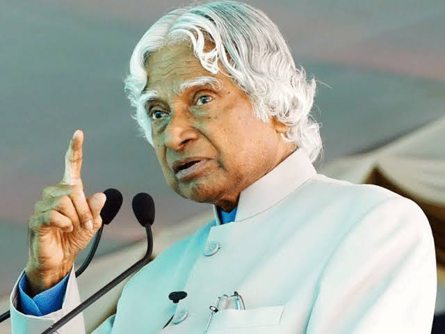

"Don't take rest after your first victory because if you fail in second, more lips are waiting to say that your first victory was just luck."
Biography
Abdul Kalam, born on October 15, 1931, in Rameswaram, India, was a renowned Indian scientist and the 11th President of India. He played a pivotal role in India's space and missile programs, earning him the title "Missile Man of India." Kalam's leadership led to the successful development of indigenous satellite launch vehicles and ballistic missile systems. Beyond his scientific achievements, he was known for his humility, wisdom, and dedication to youth education. Kalam authored inspirational books like "Wings of Fire" and "Ignited Minds." He passed away on July 27, 2015, while delivering a lecture. His legacy continues to inspire millions worldwide, symbolizing excellence, innovation, and service to humanity.
What I admire most about Dr. Kalam is his unwavering dedication to the progress and prosperity of India. Despite facing numerous challenges in his early life, he rose to prominence through hard work, perseverance, and a deep passion for science and technology.His humility, wisdom, and indomitable spirit continue to inspire millions around the world. Dr. Kalam believed in the power of education and often emphasized the importance of nurturing young minds to become future leaders and innovators.One of his most famous quotes, "Dream, Dream, Dream. Dreams transform into thoughts, and thoughts result in action," reflects his belief in the power of dreams and aspirations to drive positive change in society. Dr. APJ Abdul Kalam's legacy will forever be etched in the hearts of people worldwide. His contributions to science, education, and humanity serve as a guiding light for generations to come.